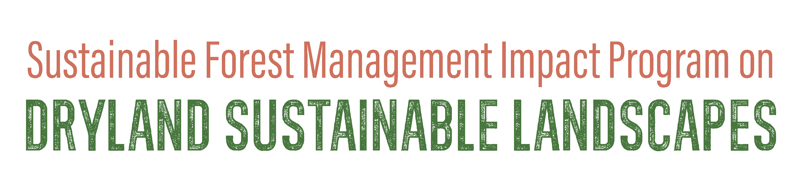

Cisterns
Lined underground tanks storing roof and surface runoff
What it is
Cisterns are lined underground reservoirs – often the traditional pear-shaped, rock-cut cistern – that store roof or surface runoff for domestic use and supplementary irrigation. The buried form stores a great deal of water without taking up scarce surface land.
From a single farmstead’s tank to national programmes, cisterns are the backbone of household water security in the drylands: the FAO "1 Million Cisterns for the Sahel" initiative, modelled on Brazil’s semi-arid programme, is rolling them out across the region.
How it works
- Channel roof/surface runoff through a settling basin into a covered, lined underground chamber
- The cover cuts evaporation and contamination
- Draw water by bucket or pump for the dry season
- Rehabilitate old cisterns by clearing the catchment, de-silting and flushing the first runoff
Key facts
- Sahel programme
- 15 m³ household / 50 m³ women’s-group cisterns
- Brazil model
- >1.3 million cisterns serving ~12 million people
- Rehab effect
- raised watershed storage ~75% (Palestine)
- Risk
- microbiological contamination if uncovered/untreated
- Use
- domestic + supplementary irrigation
WOCAT classification
- Measures
- SStructural
- WOCAT group
- Rooftop / macro-catchment storage
- Degradation addressed
- Water degradation (aridification)
Classified per the WOCAT SLM-Technologies classification and the four water-harvesting groups of Mekdaschi Studer & Liniger (2013).
✦Source and links
Drawn from the FAO / ICARDA Webinars Series on Rainwater Harvesting (NENA region, 2022):
- • Wael Abu Rmaileh (UN-ESCWA) – Module 8 (Palestine)
- • Bamby Sankhare (FAO, “1 Million Cisterns for the Sahel”) – Module 9
- • Ihab Jnad (ACSAD) – Module 7
Sources (APA, 7th ed.).
- Mekdaschi Studer, R., & Liniger, H. (2013). Water harvesting: Guidelines to good practice. CDE/Bern, RAIN, MetaMeta, IFAD. Link
- FAO / ICARDA. (2022). Webinars series on rainwater harvesting (WEPS-NENA / Water Scarcity Initiative). Series flyer (PDF)